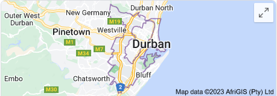

Durban Demographics
Local Population
3 721 million (2018)
Area
2 292 km2
Mayor
Mxolisi Kaunda
Area Code
031
Photo Gallery

Shaka Marine World, one of the most popular aquariums in South Africa, showcasing the greatest variety of shark species
The City of Durban has one of South Africa's finest beaches with a warm Indain Ocean current


Durban South Africa also had a footprint in the 2010 Soccer World Cup with this archetectural stadium
Come and see Durban's oldest public institution and Africa's oldest surviving botanical gardens.


A huge portion of Toyota vehicles are manufactured in the Durban Toyota manufacturing plant